Cada vehículo, en su carpeta. Sin clasificar a mano.
Arrastra la carpeta de la jornada. La aplicación lee la matrícula de cada foto, agrupa el reportaje por vehículo y crea una carpeta por matrícula con las fotos renombradas, lista para el expediente. Solo revisas lo que no es concluyente.
Windows 10 y 11 · 30 días gratis, sin tarjeta · procesado local
Jornada · 1.284 fotos
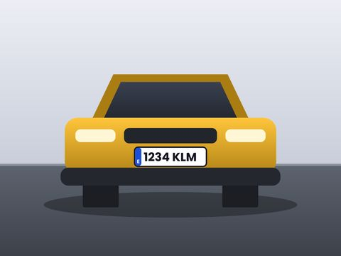
1234 KLM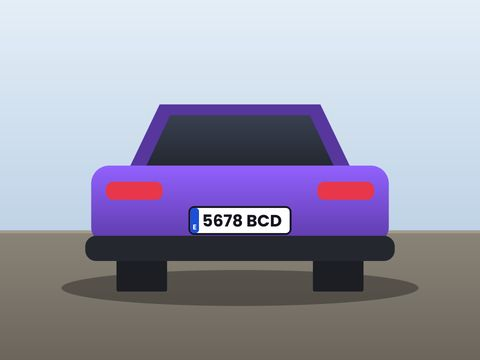
5678 BCD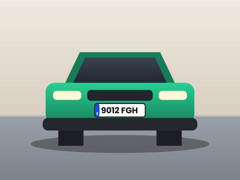
9012 FGH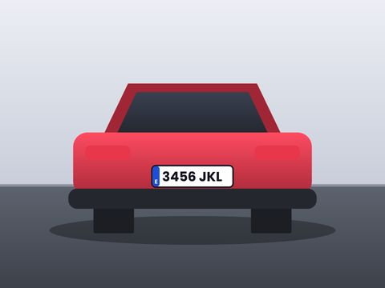
3456 JKL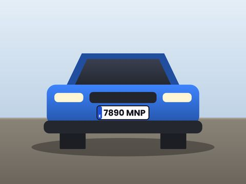
7890 MNP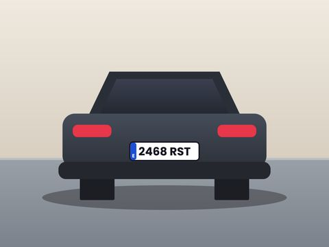
2468 RST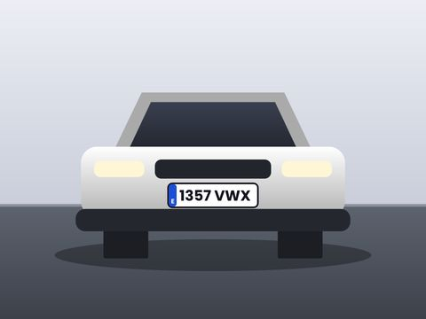
1357 VWX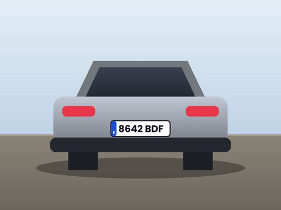
8642 BDFDe la tarjeta al expediente, en tres pasos
Sin cambiar tu protocolo de inspección: sigues fotografiando como siempre.
- 01
Arrastra la carpeta de la jornada
Desde la tarjeta o el móvil: JPG, HEIC del iPhone o PNG, con todas sus subcarpetas.
- 02
Revisa lo no concluyente
Cada vehículo aparece con sus fotos y su matrícula. Las lecturas dudosas vienen marcadas para que las confirmes.
- 03
Listo para el expediente
Una carpeta por matrícula, con las fotos renombradas «2821MPF (1)», «(2)»… y, si lo necesitas, el reportaje fotográfico en PDF.

Decides solo lo que requiere criterio pericial
La aplicación separa las agrupaciones claras de las dudosas. Corregir un vehículo es teclear su matrícula; unir dos grupos, un clic.
- Copia por defecto: los originales no se modifican nunca.
- Avisos: fotos que ya clasificaste en otro lote y vehículos con pocas fotos, por si falta alguna vista.
- Atajos de teclado: una jornada completa se revisa sin soltar el teclado.
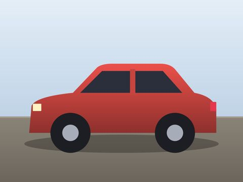
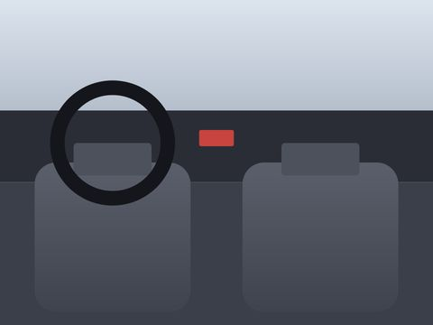
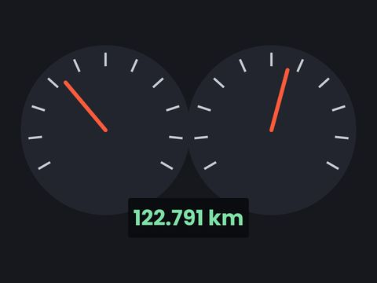
Lectura más repetida: 4784 MNG (27 de 31 fotos) · dudosa: 4764 MNG (4 fotos)
El reportaje en PDF, sin maquetarlo a mano
De cada vehículo sale un PDF listo para adjuntar al expediente: la portada con los datos del siniestro y las fotos en el orden y la orientación que elijas.
- Tus plantillas: logotipo del gabinete, datos de la portada y fotos por página.
- Lo ves antes de crearlo: pulsas una foto para girarla, quitas las que sobran y cambias los textos si hace falta.
- Bajo cada foto: lo que quieras escribir («Daño en la puerta delantera»), su número, la fecha y hora en que se hizo y el nombre del archivo.
- Cadena de custodia: si quieres, una hoja con la huella SHA-256 de cada foto.
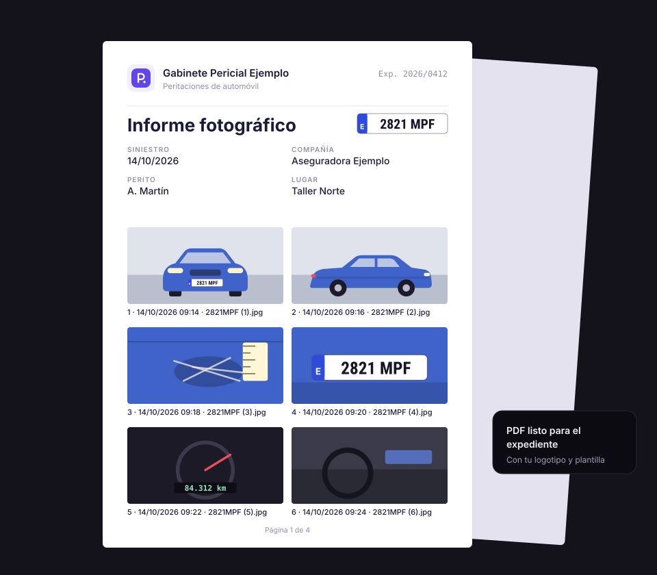
Del móvil al ordenador, sin cable
Escaneas un código QR con el móvil y las fotos de la jornada pasan al ordenador por la wifi, sin subirlas a internet.
- Sin instalar nada en el móvil: se abre en su navegador.
- Tal cual las hizo el móvil, con su fecha y hora.
- Al terminar, se separan por matrícula como cualquier carpeta.
PeritoLab · Enviar fotos
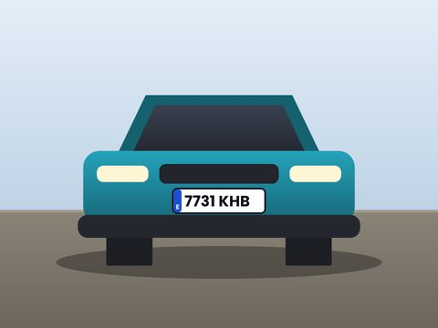
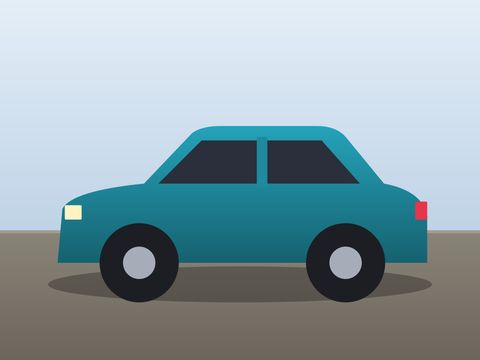
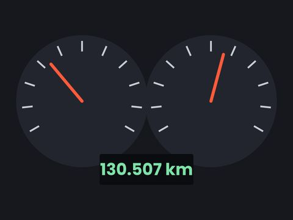
12 de 31 enviadas
Las fotos de cada coche, listas para la plataforma
Al lado de la carpeta del coche aparece otra, «para subir», con las fotos como las pide GT Motive, Audatex o el portal de la aseguradora.
- Renombradas con el número de siniestro (o la matrícula), en su orden.
- En JPG y con un peso máximo por foto si la plataforma lo pide.
- Sin la ubicación GPS, con su fecha y con el informe PDF al lado.
- Las fotos del coche no se tocan.
4409 MZT · SN-2026-114 (para subir)
Nº de siniestro · máximo 1 MB · sin GPS · con el informe
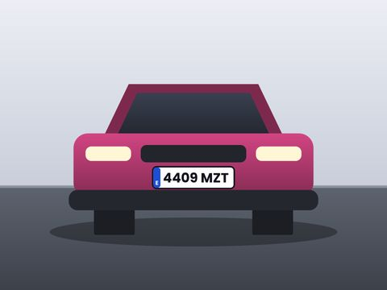
SN-2026-114 (1).jpg0,9 MBLista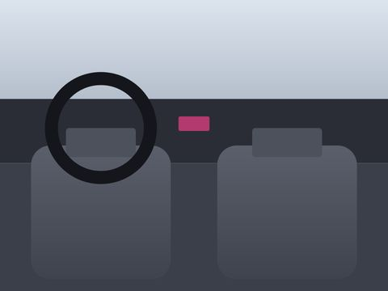
SN-2026-114 (3).jpg0,7 MBListaDiseñada para el día a día del perito de automóvil
Reconocimiento local de matrículas
El modelo de reconocimiento se ejecuta en tu ordenador y sin conexión: rápido y sin enviar imágenes a terceros.
Reportaje fotográfico en PDF
El reportaje de cada vehículo en un PDF listo para el expediente, con tus plantillas: logotipo, portada con los datos del siniestro y fotos en el orden y la orientación que elijas.
Búsqueda por matrícula
Escribe parte de una matrícula y accedes a su carpeta, a la ruta para adjuntarla al expediente y a todas sus fotos.
Compresión y conversión integradas
Reduce el peso de un lote hasta un 80 % o cámbialo de formato (HEIC a JPG, PNG, un PDF por carpeta…) sin salir de la aplicación.
Para todo el gabinete
Cada perito trabaja en su equipo y la cuenta de empresa ve la actividad de todos, sin mover las fotos de sitio.
Control de duplicados
Detecta las fotos ya clasificadas y los vehículos con pocas fotos, por si falta alguna vista.
Fotos del móvil, sin cable
Escaneas un código QR con el móvil y las fotos de la jornada pasan al ordenador por la wifi, sin subirlas a internet.
Listas para la plataforma
Las fotos de cada vehículo con el número de siniestro y el peso que pide GT Motive, Audatex o el portal de la aseguradora, sin GPS y con el informe PDF.
Pruébala en un minuto
Trae un lote de ejemplo: ves cómo separa una jornada por matrícula antes de buscar tus propias fotos.
Cada perito en su ordenador. Tú ves la actividad de todos.
La cuenta de empresa ve el trabajo de cada perito: lotes, vehículos y fotos, sin mover las fotos de sitio.
- Invitar es enviar un archivo: el perito lo abre y queda vinculado.
- Plazas del plan: se libera la de un ordenador que ya no se use con un clic.
- Invita a otro gabinete: si contrata, un mes gratis para los dos.
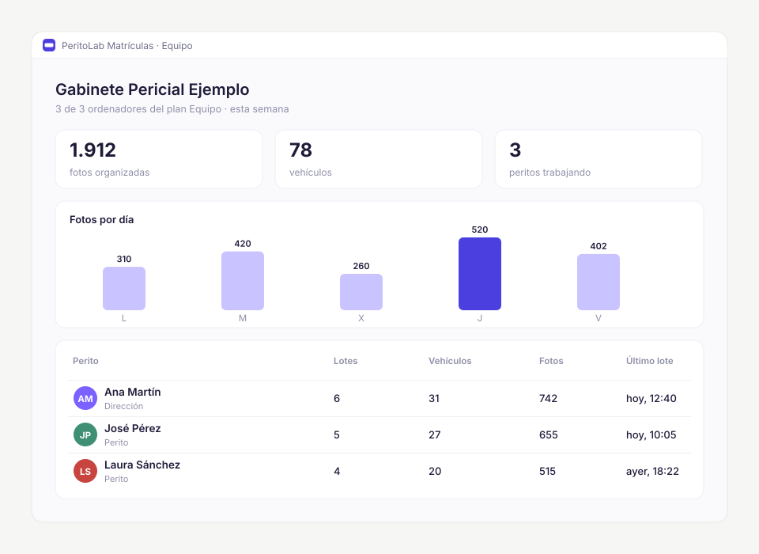
Tus fotos no salen de tu ordenador
Las matrículas se leen en tu equipo. No se suben fotos, matrículas ni datos de asegurados: la clasificación funciona sin conexión, lo que simplifica tus obligaciones de protección de datos.
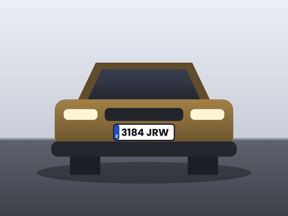
Original · IMG_4581.HEIC · sin tocar- Procesado 100 % localFunciona sin conexión.
- Originales intactosPor defecto se copian; puedes revisar cada vehículo antes.
- Sin GPS al enviarlasLas fotos para la plataforma salen sin la ubicación.
Nació en un gabinete pericial: GPFIAL, dos años de fotos reales
GPFIAL S.L.P., un gabinete de Canarias, probó la aplicación con su propio archivo de 2025 y 2026, tal como salió de los móviles y de las cámaras. Lo que no está claro no se adivina: se marca para revisarlo.
Leer el caso completo →Un precio por número de ordenadores
30 días de prueba con todas las funciones. Después, el plan según los ordenadores del gabinete.
Básico
Perito independiente
o 289,95 € al año
- 1 ordenador
- Todas las funciones
- Reportaje fotográfico en PDF
Equipo
Gabinete pequeño
o 639,95 € al año
- 3 ordenadores
- Actividad de todo el equipo
- Todas las funciones
Empresa
Gabinete con varias sedes
o 1.289,95 € al año
- 8 ordenadores
- Actividad de todo el equipo
- Todas las funciones
Ilimitado
Redes periciales y grandes gabinetes
o 1.989,95 € al año
- Ordenadores sin límite
- Actividad de todo el equipo
- Todas las funciones
Precios finales con impuestos incluidos y sin permanencia. Empiezas con la prueba de 30 días, con todas las funciones y sin tarjeta; cuando decidas, contratas el plan desde la propia aplicación, con pago seguro con Stripe. El Compresor y el Conversor son siempre gratis.
¿Cuánto tiempo te devuelve?
Separar a mano cada foto en la carpeta de su vehículo lleva unos 4 segundos. Pon tus números.
Recuperas cada mes3,3 horas Unos 67 € de tu tiempo, frente a 29,95 € del plan Básico.
Lo que nos suelen preguntar
¿Necesito conexión a internet?
Para clasificar, no: todo el procesado es local. Solo se conecta para validar la licencia, comprobar si hay versiones nuevas y, si lo decides, contratar un plan.
¿Qué pasa con mis fotos?
No salen de tu ordenador. Por defecto se copian (los originales no se modifican) y puedes revisar cada vehículo antes de que se copie nada.
¿Y si una matrícula no se lee bien?
Las fotos con lectura dudosa se marcan para revisión, y las que no muestran matrícula van a «Sin clasificar». Corregir un vehículo es teclear su matrícula.
¿Cómo funciona la prueba gratuita?
30 días con todas las funciones y sin tarjeta. Al terminar dispones de 7 días de cortesía, y lo ya clasificado se queda siempre en tus carpetas.
¿Puedo cambiar de plan o darme de baja?
Sí, cuando quieras, desde la propia aplicación. Si te das de baja, la licencia sigue activa hasta el final del periodo pagado.
¿En qué ordenadores funciona?
En Windows 10 y 11 de 64 bits. Cada ordenador ocupa una plaza del plan, y puedes liberarla desde la propia aplicación.
¿Sirve para talleres y tramitadores?
Sí. Cualquier flujo con fotos de vehículos (recepción en taller, tramitación de siniestros, inspecciones en campa) se clasifica igual por matrícula.
¿Qué es PeritoLab?
PeritoLab desarrolla software para peritos y gabinetes periciales. Matrículas fue la primera herramienta, y nació dentro de un gabinete pericial de verdad: puedes leer el caso real de GPFIAL. PeritoLab Compresor, gratuita, fue la segunda, y PeritoLab Conversor, también gratuita, la tercera.
Pruébalo con las fotos de hoy
30 días con todo, sin tarjeta. Si no te ahorra tiempo, no pagas nada.
¿Dudas? Escríbenos a contacto.peritolab@gmail.com